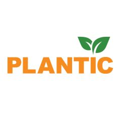

Видео

MITEX 2026 · Россия · Стенд 7D102
ПЛАНТИК, ООО
Карточка проверена 10 ноября 2026, 09:25 · Источник ↗ · Снимок оригинальной карточки ↗
О компании
PLANTIC – российский бренд садовых инструментов, признанный эксперт на рынке садовых инструментов, с развитой дистрибуцией на рынках РФ и части стран СНГ. Собственное производственная площадка компании располагается в Ленинградской области, с главным офисом в центре Москвы. PLANTIC – это опытная команда, состоящая из энтузиастов своего дела и настоящих экспертов рынка садового инвентаря России. Сегодня компания особенно активно развивается, обеспечивая многообещающий рост в будущем.
Контакты
Сайт: https://plantic.ruE-mail: info@plantic.ruТелефон: +7 495 130 11 30Телефон: +7 (495) 130-11-30social: https://vk.com/planticrusocial: https://dzen.ru/planticru?utm_referrer=plantic.ru
Все контактные сведения из карточки
Контакты Адрес компании Телефон: +7 495 130 11 30 E-mail: info@plantic.ru Адрес: 105120, Россия, Москва, 2-й Сыромятнический пер., д.1 Веб-сайт: https://plantic.ru/ E-mail: info@plantic.ru Телефон: +7 (495) 130-11-30
Все рубрики участника
Mitex - Рубрикатор
- 2. Садовая техника, инструмент, инвентарь, оборудование, расходные материалы и насосы
Зал
- Зал № 7
Участник выставки
- MITEX
Видео, каталоги и документы
Последние публикации в Telegram
До десяти последних сообщений каждого найденного канала. Оригинал открывается по ссылке.

🛠️ Уже совсем скоро встречаемся на MITEX 2026! С 10 по 13 ноября PLANTIC будет представлен на стенде № 7D102, павильон 2, зал 7 в…

🪓 А вы знаете, из чего складывается хороший топор? Это не только лезвие и топорище. Важны баланс, форма рукоятки, материал и даже то, насколько удобно…

❄️ Почему снеговая лопата не ломается на морозе? Дело не только в конструкции. За прочность ковша на холоде отвечают структура полимера и состав материала. Именно…

🪵 Пока морозы не пришли, самое время запастись дровами А вы знали, что первые прототипы топора из заостренных камней появились около 1,5–1,6 миллиона лет назад…


🪓 Розыгрыш завершен! Мы подвели итоги и готовы назвать победителя! 🎉 Топор PLANTIC 7 и перчатки PLANTIC 8 получает @superyourassik ! 🥳 Спасибо всем, кто…

❄️ Первый снег не за горами. Пора подготовиться к уборке участка заранее У PLANTIC есть скрепер для уборки снега Plantic snow , который поможет быстро…


🏒 PLANTIC партнер ХК СКА уже 4 года! PLANTIC – партнер одного из самых известных хоккейных клубов страны. СКА ведёт свою историю с 1946 года,…


🌿 Участок глазами трех поколений Как меняется представление об идеальной даче от поколения к поколению? Мы решили представить, как выглядел бы участок у бумеров, миллениалов…

🚗 Праздник тех, кто всегда в пути Кому-то автомобиль нужен каждый день, чтобы добраться до работы и по делам. Для кого-то он становится частью путешествий…

🛠️ Этой осенью встречаемся на MITEX 2026! PLANTIC в этом году станет участником 1 9-й Международной выставки инструмента, оборудования и технологий MITEX 2026 . Она…